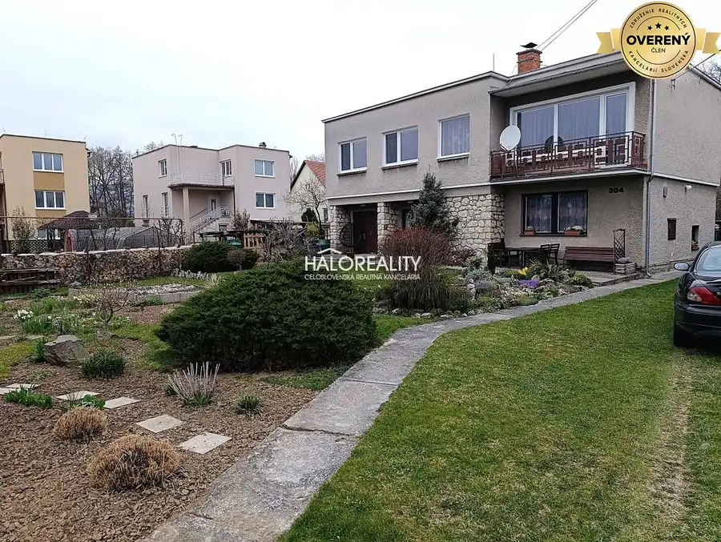
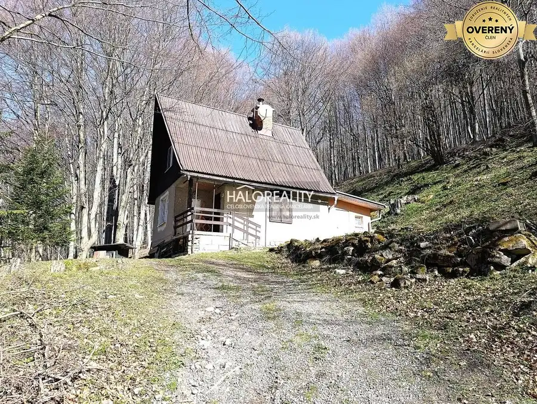
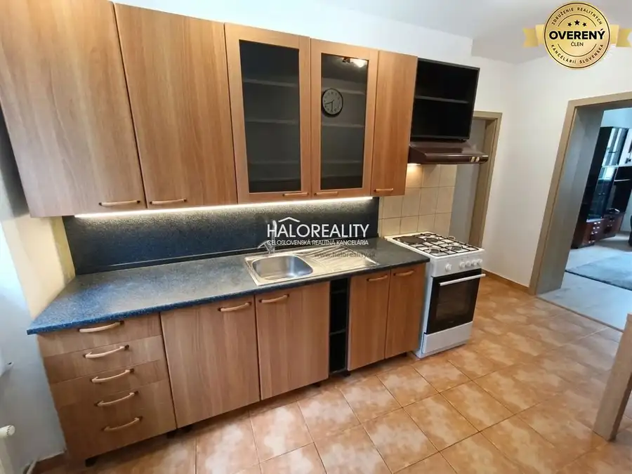

Predaj, pozemok pre rodinný dom 7430 m2 Oslany - E...
Oslany
- Plocha7430 m²
- Vlastníctvoosobné
- Energetická triedaG
O nehnuteľnosti
Ponúkame na predaj pozemok o rozlohe 7430 m2 v okrajovej časti Oslian.
Pozemok je orientovaný na Juh, slnečný, priestranný, mierny svah až rovina. Pozemok je v extraviláne, žiadosť o zahrnutie pozemku ako stavebný, bola podaná a možnosť výstavby bude do 2 rokov. V okolí pozemku už prebieha výstavba rodinných domov. Siete sú v dosahu v blízkosti. Možnosť odkúpenia menšej výmery od 2000 m2.
Investícia do tohto pozemku je výhodná z dôvodu lokality (tichá, okrajová, južná strana, ľahká dostupnosť),ďalej ceny, ktorá vzrastie v momente vydania rozhodnutia o výstavbe minimálne na dvojnásobok.
ID ponuky: PD-71760
Cena za nehnuteľnosť je KONEČNÁ, vrátane provízie, právneho servisu zabezpečeného advokátom, poradenstva, základného správneho poplatku na katastri a hypotekárnych služieb (viac na našej webovej stránke).
Parametre
| Rozloha pozemku | 7430 m² |
|---|---|
| Poschodie | neuvedené |
| Vlastníctvo | osobné |
| Balkón | nie |
| Lódžia | nie |
| Garáž | nie |
| Výťah | nie |
| Klimatizácia | nie |
| Energetický certifikát | G |
| Dátum zverejnenia | 24. 3. 2026 |
Kde to je
Mohlo by Vás zaujímať

Rodinné domy9 262 500 €Predaj, rodinný dom Nedožery - Brezany - EXKLUZÍVNE ... Brezany, Nedožery 5-izbový242 m² Ponúkame na predaj rodinný dom v obci Nedožery - Brezany na pozemku s rozlohou 656 m2. Dom je dvojpodlažný s rovnou - pultovou strechou. Dom je…
Chaty a chalupy9 147 000 €Predaj, chata Lehota pod Vtáčnikom Lehota pod Vtáčnikom 3-izbový70 m² Ponúkame na predaj rekreačnú chatu v chatovej osade Sekaniny nad obcou Lehota pod Vtáčnikom. Chata bola kolaudovaná v roku 1979, je to klasická…
Byt9 75 990 €Predaj, dvojizbový byt Nováky - EXKLUZÍVNE HALO REALITY Nováky 2-izbový60 m² Ponúkame na predaj dvojizbový byt v meste Nováky s rozlohou 60 m2 aj s dvomi pivnicami. Byt sa nachádza v tehlovej bytovke na vyvýšenom prízemí,…